Scuffers Marketing Proposal
This marketing proposal presents a case for Scuffers’ strategic entry into the U.S. market. Through a brand audit and analysis of trends in both global and local contexts, it outlines how Scuffers can anchor its brand identity and strengths to meet the needs of an American audience.
It also suggests flexible marketing strategies and positioning to ensure long-term success in a highly competitive landscape.
- Client
- Scuffers
- Role
- Brand strategy, editorial design
- Scope
- Market analysis, positioning, go-to-market
- Year
- 2024
- Discipline
- Strategy

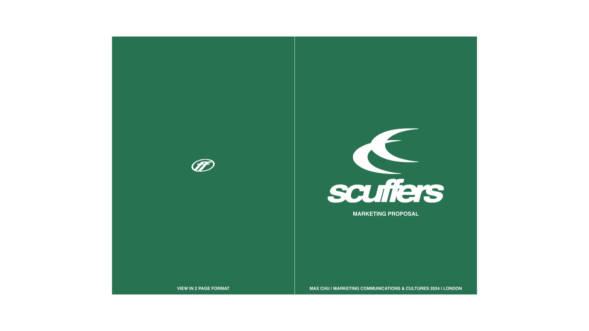
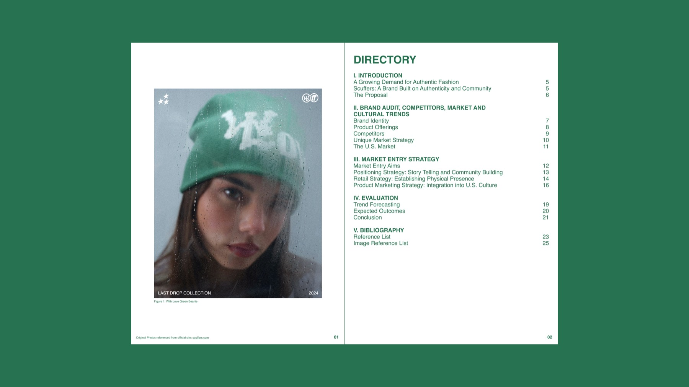
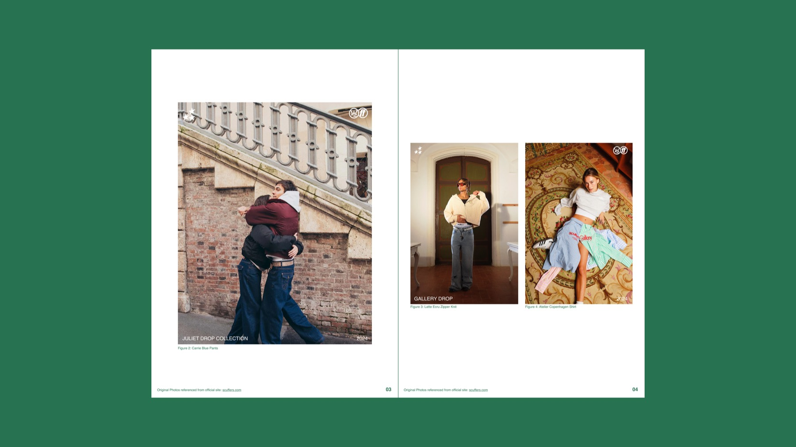
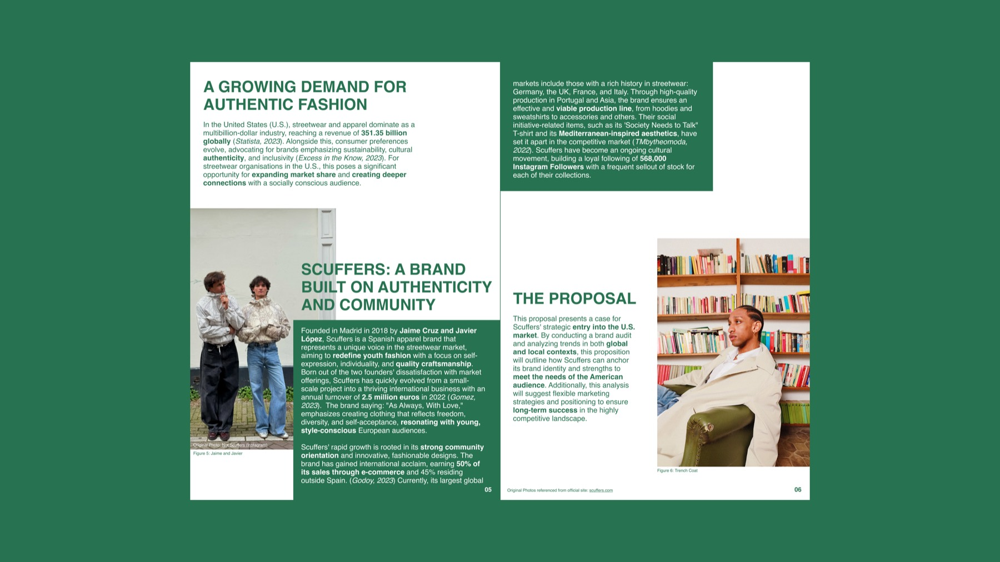
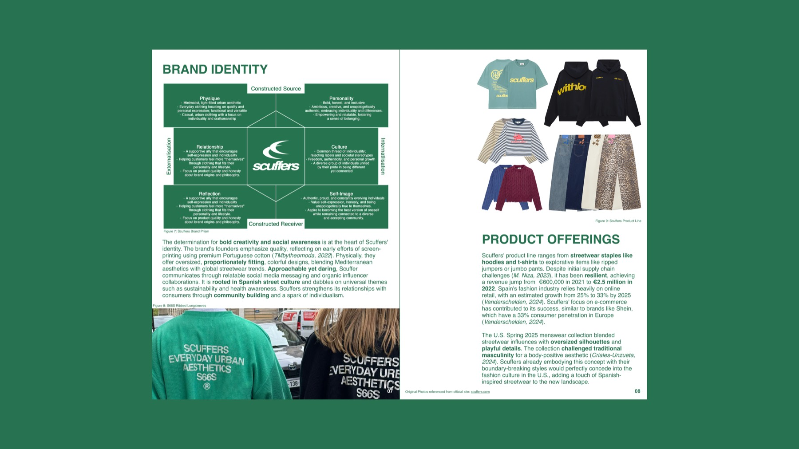
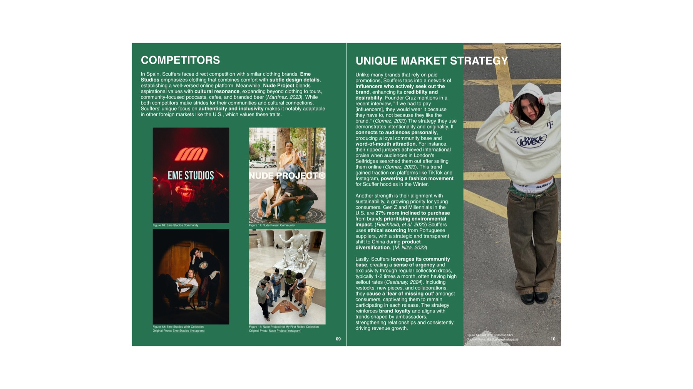
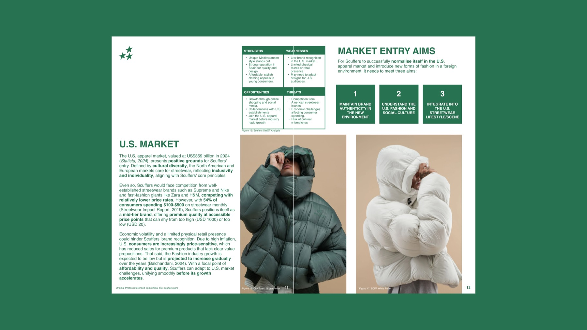
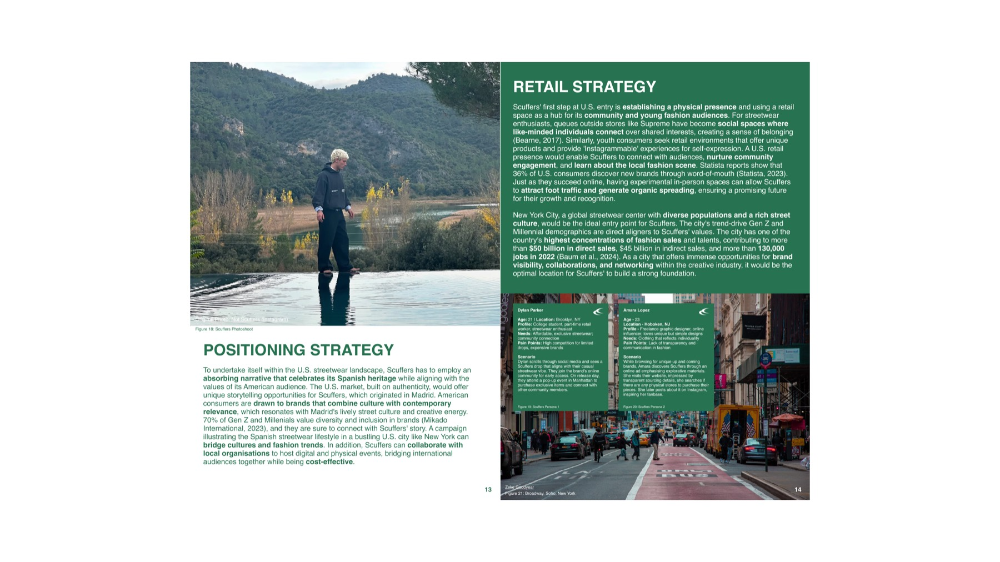
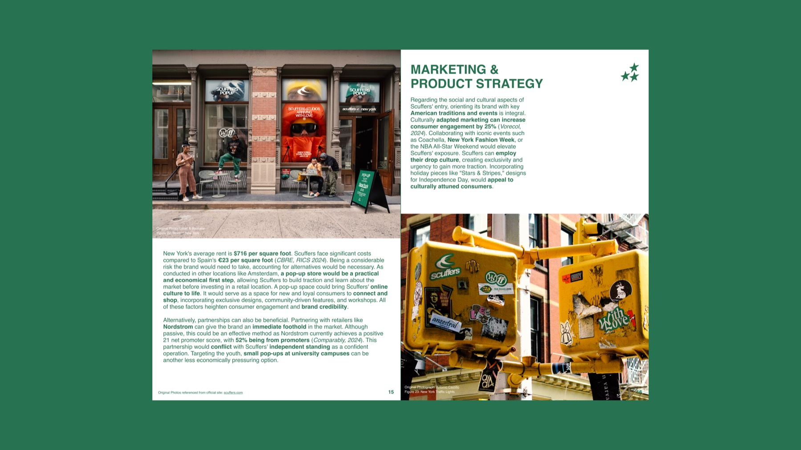
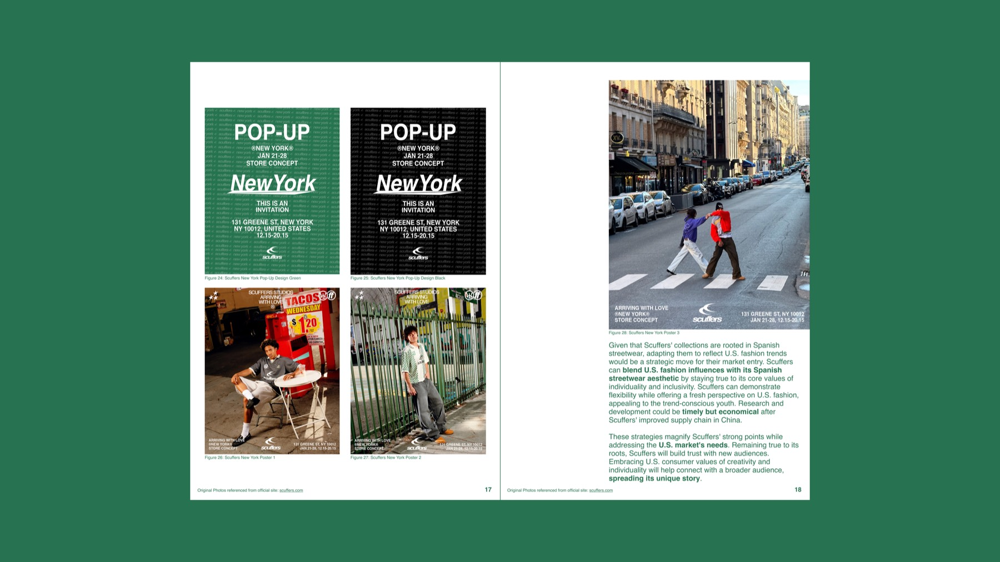
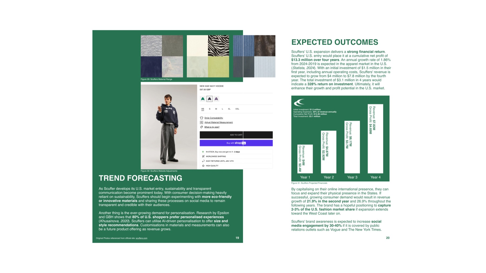
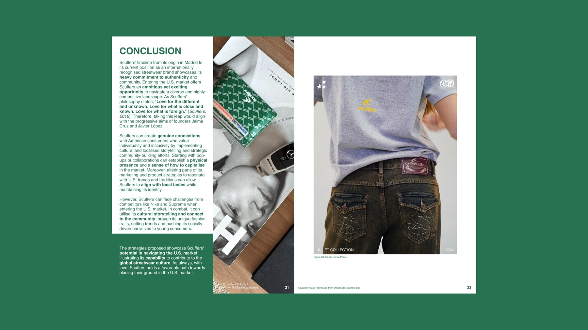
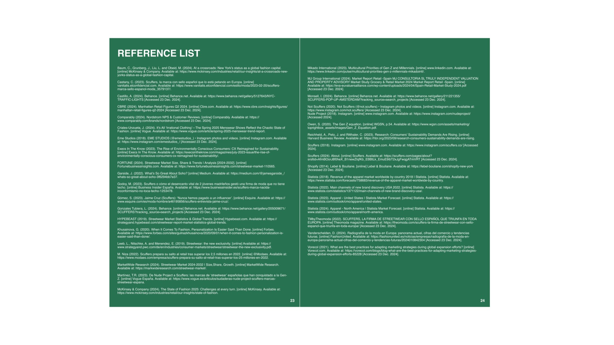
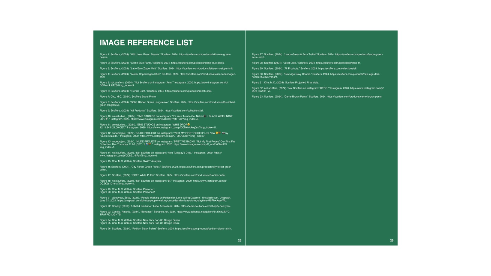